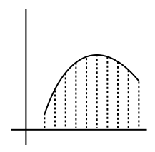
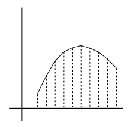
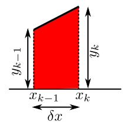
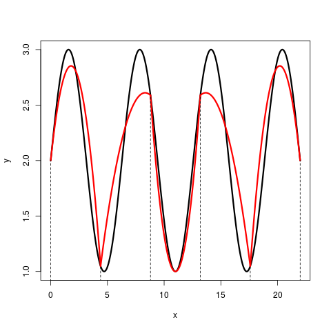
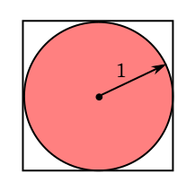
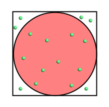
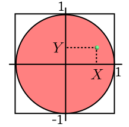
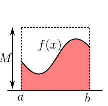

Suppose that we are given a function $f(x),$ and we are to compute
$$
\int_a^bf(x)\,dx,
$$
where $a,b$ are given numbers. One method
is to first find an indefinite integral of $f(x):$
$$
F(x) = \int f(x)\,dx,
$$
and then to compute $F(b)-F(a).$ This method depends on our ability to compute the
indefinite integral $F(x).$ There are many situations where computing
$F(x)$ is difficult or even impossible. In such cases, we resort to
numerical integration or quadrature. A numerical integration
method has the advantage that we do not need to find the indefinite
integral, but it has the disadvantage that the answer may be approximate.
There are many different methods of numerical integration. In this page,
we shall learn two such techniques, both belonging to a family called
Newton-Cotes quadrature.
First we split $[a,b]$ into a grid of equally spaced $x$-values, and evaluate $f(x) $ at those points:

Take a grid of $x$-values
Then we join the points by line segments:

Continuous piecewise linear approximation
Each piece is a trapezium:

This trapezium has
area $\frac 12(y_{k-1}+y_k)\times\delta x$
We add the areas of all the trapeziums to approximate $\int_a^b f(x)\, dx.$
EXAMPLE:
Compute
$$
\int_1^2\frac{1}{\sqrt{2\pi}} e^{-x^2/2}\,dx,
$$
by trapezium rule using $n=5.$ We split the interval $[1,2]$
into 4 equal parts and compute $y_i$'s.
i y
-----------
0 0.2420
1 0.1826
2 0.1295
3 0.0863
4 0.0540
So by applying trapezium rule the integral is approximately
$$
{0.25\over2}\times[0.2420 + 2\times(0.1826+0.1295+0.0863) +0.0540] = 0.1366.
$$
It is instructive to compare this with the actual value, which is 0.1359.
The following J code allows you to use a finer grid:
In trapezium rule we interpolated by straight lines, i.e.,
polynomials of degree $\leq 1.$ If we use polynomials of
degree $\leq 2$, then we may expect better accuracy. To fit
such a polynomial, we need three points. So we split the
interval into an even number of subintervals, and fit a parabola (i.e.,
polynomial of degree $\leq 2$) over two consecutive
subintervals, i.e., first parabola over subintervals 1 and 2, the next parabola over subintervals 3 and 4, etc.

$y=\sin x$ shown in black. Parabolas
in red
We may work out the exact formulae for the fitted polynomials,
then integrate them, and add. But there's a simpler method.
Focus on a single pair of consecutive subintervals,
say $[x_0,x_1]$ and $[x_1,x_2].$ We can see
that the answer is going to be like $\delta x\times(a y_0 + b y_1 + c y_2).$
(Why?)
In general, the area is going to depend
on $x_0,x_1,x_2,y_0,y_1,y_2$. Now we shall perform some
simple geometric transformations of the region to guess the form
of this function:
First, translating
the $x_i$'s by a fixed amount (keping the $y_i$'s
fixed) is not going to change the area. So the area depends
on $x_i$'s only through $\delta x.$
If the region is stretched horizontally by some factor
(keeping the vertical direction unaffected), then the area also
gets multiplied by the same factor. So $\delta x$ must
occur as a multiplicative factor. Thus, the area must be of the
form $\delta x\times$some function of the $y_i$'s.
If the region is stretched vertically by some factor, the
area gets multipled by the same factor. So the area must be of
the form $\delta x\times (ay_0+by_1+cy_2),$ for some
constants $a,b,c.$
If our integrand were indeed a polynomial of degree $\leq
2$, then this should give us the exact answer. In particular,
this should give us the exact answer if the integrand
were $1$ or $x$ or $x^2.$ This will give us three
equations in three unknowns. Solving them you'll get $a = c=\frac 13$ and $b=\frac 43.$
EXAMPLE:
Now let us compute the integral from the last example using Simpson's
rule. We shall again use $n=4.$ This time the value is
$$\begin{eqnarray*}
\frac{0.25}{3}\times\left[\right. \times (0.2420+0.0540)\\
& + & \left.2\times(0.1295) +
4\times(0.1826 + 0.0863)\right] = 0.1359,
\end{eqnarray*}$$
which is correct up to 4 decimal places. Notice how Simpson's rule gives
more accurate value here than the trapezium rule, though we have used
the same $n$ in both methods.
This is a rather different approach that is conceptually very
simple. Here we consider a definite integration problem as a
problem of finding the area of a region. The approach is best
explained by an example.
EXAMPLE:
Suppose that we want to find the value of $\pi.$ We consider
this as the problem of finding the area of a unit circle. First,
we bound the circle in a simpler region, say a square, as shown
below.

Circle in square
Now pretend that this square is a target board for dart throwing,
and a child is throwing darts randomly at the board in a way that
each point is as likely to be hit as any other point. Then the
chance of a random dart landing in any given region is
the area of that region divided by the area of the square (which
is $(1+1)^2 = 4$).
A typical throw of 16 darts may produce a result like this:

16 random throws
Here the event "hitting the circle" has occured for 10 out of 16
cases, so the sample proportion is $p_{16}=\frac{10}{16} =
\frac 58.$ By laws of large numbers, we expect
$$
\frac \pi4\approx \frac 58,
$$
or $\pi\approx 2.5.$ This is of course a rather poor
approximation, but the accuracy improves with increasing number
of throws. As "randomly dart-throwing children" may not be easily
available, we shall employ a computer for that purpose. We set up
a coordinate system as follows.

Coordinate system
A random dart hit is now $(X,Y),$ where $X,Y$ are
independent $Unif(0,1)$ random variables. Checking if the
dart has hit the disc is simply checking whether $X^2+Y^2 <
1.$ The following J code implements the idea.
p=: _1+2*? 2 1000 $ 0
in=:1>+/*~ p
'dot; pensize 3' plot ;/|: in # |:p
0.004*+/in
We shall now use the idea to approximate an integral of the
form $\int_a^b f(x)\, dx.$ Since we shall be approximating
integrls using probabilities, we have to make sure that $f$
does not change sign in the interval $[a,b].$ Let's assume
that $f(x)\geq 0$ over the entire interval. Let $M>0$ be
some known upper bound for $f.$ Then the graph may be put
inside a rectangle as follows:

Graph in rectangle
Again we throw darts randomly at the rectangle and find the
proportion of darts hitting the shaded region. Mathematically, we
generate $X,Y$ independently with $X\sim Unif(a,b)$
and $Y\sim Unif(0,M).$ Then we check the proportion of cases
for which $Y < f(X).$ The following J code snippet
implements this idea for $f(x) = x^2$ over $[0,1]$ with
upper bound $B=1.5.$
This technique may be used to approximate the area of any region
that may be bounded in a box and for which we may test
containment. It easily extends to higher dimensions (volume,
hypervolume etc).
Comments
To post an anonymous comment, click on the "Name" field. This
will bring up an option saying "I'd rather post as a guest."